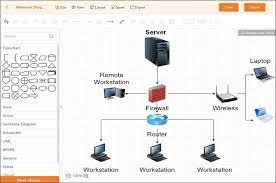
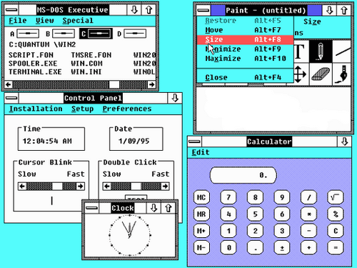
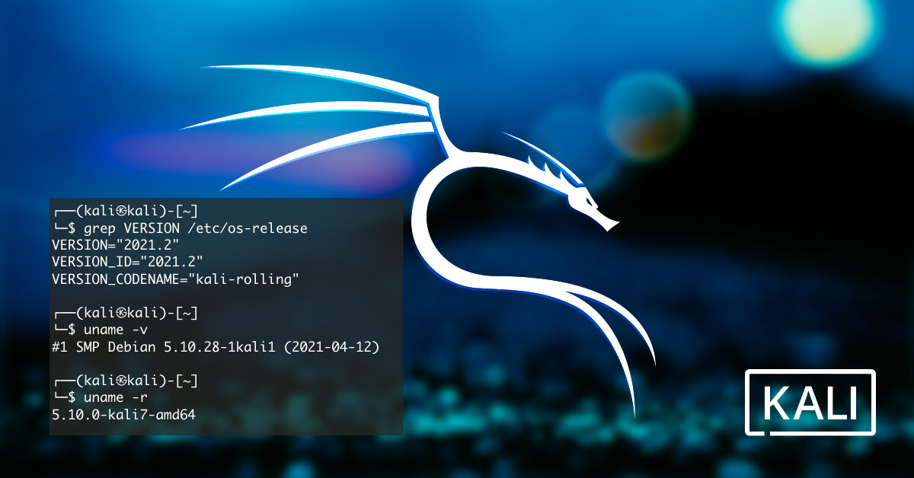
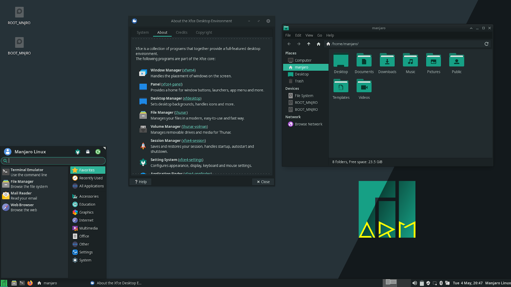
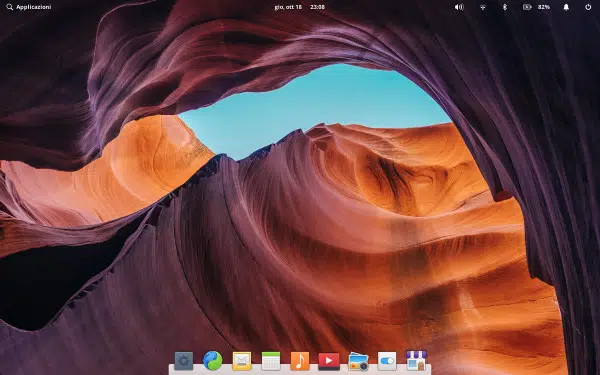

O que é um software?
Um software é um serviço computacional utilizado para realizar ações nos sistemas de computadores. Ou seja: Um software é todo programa presente nos diversos dispositivos (computadores, celulares, televisores, entre outros).
Software de sistema
Quais são os softwares de sistema? O que é software? Entenda o conceito e como funciona [+6 tipos] Os softwares de sistema são os responsáveis pelos sistemas operacionais de todos os dispositivos e auxiliam os usuários em seu uso, de forma visual e através de comandos. São extremamente complexos em sua construção.
Exemplos: Windows, Android, iOS.

Software de aplicação
O software de aplicação é criado, em regra, para executar tarefas específicas tal como o processamento de texto, reprodução de áudio. Ao contrário do software de sistema, estas tarefas não são indispensáveis ao normal funcionamento do computador e que só são executa- das a pedido do utilizador.
Exemplos: Chrome, calculadora, Windows Media Player, Microsoft Word, AutoCAD, Adobe Photoshop.
Software de Programação
Softwares de programação são softwares que permitem que programadores criem outros programas, através do uso de linguagens de programação. Eles fornecem ferramentas e soluções para testar, compartilhar, gerenciar e até de facilitar a escrita dos códigos.
Exemplos: Word, Exel, Paint, Bloco de notas, calculadora. SOFTWARE DE PROGRAMAÇÃO: são softwares usados para criar outros programas, a parir de uma linguagem de programação, como Java, PHP, Pascal, C+, C++, entre outras
Software de segurança
O que é um software de segurança da informação? Trata-se de uma classe de sistemas que age na identificação, na prevenção e no bloqueio de possíveis invasões, a partir dos códigos maliciosos. Ainda assim, existem sistemas para prevenir os ataques ou, até mesmo, para limitá-los.
Isso inclui produtos de segurança como firewalls, antivírus e anti-malware. Também inclui dispositivos terminais normais, como servidores, estações de trabalho, laptops, câmeras, termostatos e geladeiras. Além disso, inclui dispositivos de rede, como roteadores e switches.
Software de bases de dados
O software de banco de dados às vezes também é conhecido como "sistema de gerenciamento de banco de dados" (DBMS). O software de banco de dados simplifica o gerenciamento de dados, permitindo que os usuários armazenem dados em um formulário estruturado e depois os acessem.
1 – ORACLE DATABASE. O Oracle Database surgiu no final dos anos 70 e atualmente, de acordo com o site db-engines, é o SGBD mais utilizado do mundo. ... 2 – MYSQL. ... 3 – SQL SERVER. ... 4 – POSTGRESQL. ... 5 – IMB DB2. ... 6 – MICROSOFT ACCESS. ... 7 – SQLITE. ... 8 – MARIADB.
Software de redes
Eles são uma extensão dos sistemas operacionais locais (e.g. Windows 98, Linux e MAC OS), complementados com um conjunto de funções básicas, e de uso geral, necessários à operação das estações, de forma a tornar transparente o uso dos recursos compartilhados.
Windows 2000 Server. ... Novell Netware. ... Unix. ... Linux.
Software Educacional
Programa de computador que visa atender necessidades e objetivos pedagógicos. Dessa forma, todo o software pode ser considerado educacional, desde que sua utilização esteja inserida num contexto e numa situação de ensino-aprendizagem, onde exista uma metodologia que oriente todo o processo.
1 1. Sponte. 2 2. Galileu. 3 3. Gennera. 4 4. Etutore. 5 5. Wpensar. 6 6. Quality/Eduxe. 7 7. Lyceum. 7.1 Meios para a captação de novos alunos. 7.2 Portal do aluno. 7.3 Portal do docente. 7.4 Portal do coordenador. 7.5 Gestão acadêmica. 7.6 Gestão administrativa.
Software de entretenimento
São diversos shows, espetáculos de teatro, Stand up, cinema e outras atrações que podem ser compradas no cartão de crédito. Os aplicativos são grandes aliados no entretenimento, por isso, é importante selecionar os melhores que atendem a sua necessidade já que existem tantas opções.
Spotify ‑ Músicas e Podcasts. Grátis. Grátis. TikTok. Grátis. Grátis. Netflix. Grátis. ... Disney+ Grátis. ... Dolby Access. GrátisOfertas em compras de aplicativos. ... iTunes. GrátisOfertas em compras de aplicativos. ... Prime Video for Windows. Grátis. ... DTS Sound Unbound. GrátisOfertas em compras de aplicativos.
Software de gestão empresarial
O software de gestão empresarial ocupa uma posição central nas organizações modernas: o painel de controle que concentra todos os dados, documentos e processos do negócio. Com ele, é possível integrar todas as áreas da empresa, automatizar tarefas e acelerar as rotinas diárias, conquistando muito mais eficiência.
Os melhores e mais utilizados softwares de gestão empresarial do mercado estão disponíveis em português, sendo que alguns são nacionais e possuem versões gratuitas. Destacamos sete deles: STRATWS One, Conta Azul, QuickBooks, Granatum, Trello, Agendor e Tiny ERP. Todos possuem funcionalidades completas e fáceis de usar.
Software de design assistido por computador (CAD)
O que é cadista? Cadista ou desenhista cadista é o termo usado para designar os profissionais que trabalham utilizando um programa CAD (Computer Aided Design), ou em português Desenho Auxiliado por Computador.
1 – Solidworks. Software padrão do setor de engenharia, usado para modelagem de peças e montagens. ... 2 – AutoCAD. O Autodesk AutoCAD, é um pacote de software CAD 2D e 3D. ... 3 – Inventor. ... 4 – Fusion 360. ... 5 – SketchUp. ... 6 – Solid Edge. ... 7 – Rhinoceros. ... 8 – ZBrush.
Oque é windows?
O Windows é um sistema operacional de interface gráfica multitarefa. Isso significa que podemos trabalhar com vários programas simultaneamente. Por exemplo poderíamos escutar um CD colocado no CD-ROM enquanto escrevemos um documento, imprimimos um outro e recebemos um fax, todos ao mesmo tempo.
Windows 1.0
Ele se caracterizava pelo modelo colorido na tela e aplicações como bloco de notas e até um Paint. Ele não permitia a sobreposição de janelas, por exemplo, e por isso todas elas ficavam expostas lado a lado.

Windows 2.0 e 2.1
Windows 2.0 foi uma interface gráfica de usuário (GUI) entre o sistema operacional Microsoft DOS e o computador, é a segunda versão da família Windows desenvolvido pela empresa norte-americana Microsoft lançado em 9 de dezembro de 1987, sucessor da versao Windows 1.x. Inicialmente, este não era um sistema operacional próprio, era apenas uma interface no modo gráfico que com o auxílio do dispositivo mouse facilitava o uso do computador com sistema MS-DOS, com funcionalidades relativamente limitadas. A primeira tentativa de criar um sistema multitarefa. Foi desenvolvido até versão 2.11. Sendo sucedido pelo Windows 3.x, lançado em 1990.
Windows 3.0 e Windows NT
No ano de 1990 aconteceu mais um lançamento, o Windows 3 que exigia um disco rígido. Naquele momento, o sistema operacional tinha uma interface visual mais colorida e moderna em relação aos anteriores. Para se ter uma ideia, a versão suportava 256 cores. Os usuários também poderiam contar com o Solitaire, como se fosse uma ferramenta para treinar o uso do mouse. No ano de 92, a versão 3.1 fez a inserção de fontes TrueType, tornando publicações viáveis pela primeira vez. Além disso, o Campo Minado já estava por lá. O Windows NT foi lançado em julho de 1993, projetado para uso corporativo, servidores e workstations (estações de trabalho, em português).
Windows 95 e a Internet
O Windows 95 (original com o codinome Chicago), lançado em agosto daquele ano, veio com o botão e o menu Iniciar. Também foi criado o conceito de “plug and play”, onde fazia a conexão de algum periférico e o sistema operacional encontrava um driver apropriado para ele funcionar. Nessa versão também tinha o ambiente de 31 bits, a barra de tarefas e outras funcionalidades. Aqui ele era multitarefa e mais estável. Ademais, a internet foi um marco, isso porque o Internet Explorer estreou no Windows 95, mas não vinha no sistema operacional. Ele exigia o pacote Windows 95 Plus! Contudo, nas próximas versões, ele já vinha instalado para os usuários.

Windows 98, Windows ME e Windows 2000
O Windows 98 trouxe o Internet Explorer 4, Outlook Express, Windows Adress Book, Microsoft Chat e o NetShow Player. Também os botões de navegação para trás e para frente e a barra de endereços e muito mais. O Windows ME, o Windows Millennium Edition, foi o último a ter como base o MS-DOS. Ele tinha a junção de uso pessoal e profissional. Nele havia ferramentas de recuperação de sistema mais automatizadas, Windows Media Player 7, Windows Movie Maker e o preenchimento automático. O Windows 2000 teve como base, o sistema Windows NT. Ele posteriormente foi o pilar para o desenvolvimento do Windows XP. Essa versão veio com a funcionalidade de hibernação.
Windows XP
Também chamado de Whistler, o Windows XP foi (segundo os especialistas) a melhor versão, apesar da aparência. As vendas aconteceram entre 2001 e 2007. As variantes foram: Windows XP Home Edition e o Windows XP Professional. Nessa época houve a unificação dos produtos Windows comerciais e de consumo da Microsoft.

Windows Vista
Após a descontinuação do Windows XP, em janeiro de 2007 foi lançado o Windows Vista (codinome Longhorn). Ele veio com o Windows Media Player 11, Internet Explorer 7, Windows Defender, reconhecimento de fala, Windows DVD Maker e a Galeria de fotos.
Windows 7
O Windows 7, no ar em 2009, foi um sistema operacional mais fácil, prático e rápido para uso. Nessa versão havia a possibilidade de encaixar janelas no topo ou nas laterais da tela.
Windows 8
O Windows 8, lançado em outubro de 2012, abandonou o botão iniciar e o menu iniciar com uma tela inicial mais amigável. Ele era mais célere que as versões anteriores e tinha apoio para os novos e muito mais rápidos dispositivos USB 3.0.

Windows 10
O Windows 10, de setembro de 2014, foi divulgado apenas como uma versão de teste. Ele é considerado uma “mudança repentina”, isso porque trouxe de volta o menu iniciar. O foco dele era a área de trabalho com um design total mais limpo e moderno. Ele foi desenvolvido para juntar todas as plataformas Windows em vários dispositivos, incluindo Windows Phone e tablets, com aplicativos universais que podem ser baixados da Windows Store e executados em todos os dispositivos Windows. Uma novidade desse software foi o assistente virtual Cortana.
Windows 11
O Windows 11, divulgado em outubro de 2021, traz algumas similaridades com o W10. Mas, presenteia com ajuste de janela mais aprimorado, agrupamento e outros.
O que é linux?
Uma distribuição Linux é um sistema operacional feito do kernel Linux, ferramentas do GNU, alguns programas adicionais e um gerenciador de pacotes. Também é encontrado com um versão de servidor e de desktop. O termo correto é distribuição Linux, mas em todo canto da internet é chamado de distro, uma maneira abreviada de dizer distribuição. Foi definida essa palavra pois sistemas como o Debian ou Ubuntu “distribuem” o kernel Linux junto com todos os softwares e utilitários necessários (como gerenciador de rede, gerenciador de pacotes, ambientes de desktop, etc) para que possa ser usado como um sistema operacional. As distribuições também assumem a responsabilidade de fornecer atualizações para manter o kernel e outros utilitários atualizados. Logo, o Linux em si é apenas o kernel, enquanto que as distribuições do Linux são os sistemas operacionais. Esta é a razão pela qual chamamos essas distribuições de sistemas operacionais baseados em Linux.
Linux Mint
Linux Mint é uma distribuição Linux criada a partir de uma comunidade baseada no Ubuntu. É amada por pessoas usuárias casuais e profissionais na área da tecnologia. Mesmo abandonado o suporte a versão 20 do Snap, o Mint ainda é bem popular. Linux Mint Distribuições linux A interface que o Linux Mint usa é Cinnamon que não faz o usuário se sentir estranho. Para a maioria das pessoas que utilizam o Windows, o Linux Mint vai parecer bem confortável. Você consegue iniciar aplicativos clicando em um botão no canto inferior esquerdo. Ao mudar para o Linux, o sistema de arquivos é diferente. Há muitas coisas novas que você terá que descobrir ao mudar para o Linux, mas com o Mint, a interface é bem amigável para o usuário final. Aumentando consideravelmente a usabilidade e performance. O Linux Mint é a melhor distribuição para usuários novatos no mundo do Linux. É estável e rápido para realizar qualquer tipo de atividade de uma pessoa normal, como assistir vídeos, ouvir música e podendo até jogar um pouco.

Linux Ubuntu
Desenvolvido por uma empresa chamada Canonical, o Ubuntu é baseado em um dos muitos derivados do Linux Debian. Esse software chegou ao mercado em 2004. As pessoas programadoras na época perceberam os destaques do sistema e sua facilidade na programação. A interface de linha de comando permitia que fosse usada uma sintaxe mínima para escrever programas. O Ubuntu tem três versões, todas desenvolvidas para diferentes propósitos. O GNOME é o gerenciador oficial do Ubuntu para a área de trabalho. Também temos por padrão o Firefox, LibreOffice, Gimp, Audacious e Rhythmbox para fechar a linha de aplicativos que vêm com o sistema. A versão mais recente atualmente é a 21.04 LTS, que também é chamada de Hirsute Hippo. Nessa nova versão existem diversas melhorias e mais apelo ao visual dos ícones. Ubuntu é a base das seguintes distribuições: Lubuntu Kubuntu Linux Mint O Ubuntu é o melhor tipo de sistema operacional para pessoas que estão começando no mundo do Linux. Podemos começar utilizando os aplicativos mais comuns e, com o decorrer do tempo, aprimorar o uso.

Linux Deepin
Deepin é uma distribuição baseada em Debian (era baseada em Ubuntu até a versão 15 lançada no final de 2015) que tem como objetivo fornecer uma interface elegante, confiável e amigável. Linux Deepin Ele não inclui apenas o melhor que o mundo de código aberto tem a oferecer, mas também criou seu próprio ambiente de área de trabalho chamado DDE ou Deepin Desktop Environment, que é baseado no kit de ferramentas Qt 5. Deepin concentra muito de sua atenção no design intuitivo. Seus aplicativos desenvolvidos internamente, como Deepin Software Center, DMusic e DPlayer, são feitos sob medida para pessoas usuárias médias. Por ser fácil de instalar e usar, o deepin pode ser uma boa alternativa do Windows para uso doméstico e no escritório.
Kali Linux
Offensive Security é a empresa responsável pelo Kali Linux. Ele por si só é uma distro Linux baseada em Debian. Foi projetado para ajudar principalmente profissionais da área de segurança com seus inúmeros testes.Vem com ferramentas como: Nmap Metasploit Framework Maltego Aircrack-ng Especialistas em segurança cibernética e estudantes são o alvo principal do Kali Linux. Principalmente, porque o Kali disponibiliza certificações que são reconhecidas pelo mercado afora, como a Kali Linux Certified Professional e Penetration Testing with Kali. Usando o gerenciador de pacotes APT, a sua versão mais recente é a de 2022.1. Se aventure no mundo da cibersegurança baixando a ISO agora mesmo.
Manjaro Linux
Manjaro Linux é um sistema operacional rápido, amigável e voltado para desktop baseado no Arch Linux. Manjaro Os principais recursos incluem processo de instalação intuitivo, detecção automática de hardware, modelo de lançamento estável, capacidade de instalar vários kernels, scripts Bash especiais para gerenciamento de drivers gráficos e extensa configurabilidade de desktop. O Manjaro Linux oferece o XFCE como as principais opções de desktop, bem como KDE, GNOME e uma edição minimalista da Net para pessoas usuárias mais avançadas. Faça o download do Manjaro agora mesmo.
Linux Debian
Debian é a distribuição mais antiga e mais popular do Linux. Como qualquer outro distro de peso, fornece uma ambientação muito agradável e rápida. Atualmente, sua última versão é a 11, que também é chamada de Bullseye. Debian O projeto como um todo disponibiliza um monte de pacotes de software, e suporta praticamente todos os dispositivos de computadores da arquitetura recente. As três principais branchs de desenvolvimento do Debian são: Estável Teste Instável Sua versão estável é a recomendada para servidores e usuários desktop. Isso porque é mais estável e confiável, raramente você vai precisar perder o seu tempo tentando arrumar algum bug. Normalmente essa é a versão que você instala no seu computador. A versão de teste é contínua e oferece as versões mais atualizadas dos programas. É muito instável geralmente e provavelmente vai surgir algum bug no meio do caminho. Também não recebe nenhum tipo de patch de segurança. Por último, seu ramo instável é onde o desenvolvimento é mais ativo. É a parte mais experimental e mostra-se como uma plataforma perfeita para que as pessoas desenvolvedoras contribuam para o código.

Puppy Linux
Puppy Linux é mais uma distribuição Linux. A diferença aqui é que o Puppy é extraordinariamente pequeno, mas cheio de recursos. O Puppy inicializa em um ramdisk e, ao contrário das distribuições de live CD que tem que extrair coisas do CD, ele carrega na RAM. Isso significa que todos os aplicativos começam em um piscar de olhos e respondem à entrada instantaneamente. Puppy Linux Distribuições Linux O Puppy Linux tem a capacidade de inicializar através de um cartão flash ou qualquer dispositivo de memória USB, CD ROM, disco Zip ou LS / 120/240 Superdisk, disquetes, disco rígido interno. Ele pode até usar um CD-RW / DVD-RW formatado em várias sessões para salvar tudo de volta no CD / DVD sem a necessidade de nenhum disco rígido.

Linux OpenSUSE
O OpenSUSE é mais uma das distribuições Linux que tem como objetivo fornecer uma interface moderna e rápida para pessoas usuárias de desktop e desenvolvedoras de todo mundo. OpenSUSE São dois ramos de desenvolvimento principais: SUSE Leap, que é a versão estável e que é voltada para as pessoas usuárias, como também para as pessoas desenvolvedoras. Tornando a escolha perfeita para quem quer ajudar no desenvolvimento de código aberto. Em contrapartida, temos o SUSE Tumbleweed, que seria a versão de teste contínua com as mais recentes versões de software e IDEs. O TumbleWeed é fácil para qualquer pessoa usuária avançada ou desenvolvedora de software, graças principalmente ao seu grande número de pacotes disponíveis. O seu gerenciador de pacotes é o Yast e é muito recomendável para que você administre os seus programas e desenvolva aplicativos com ele.

Linux Lite
Linux Lite é uma distribuição Linux amigável para iniciantes baseada no lançamento de suporte de longo prazo (LTS) do Ubuntu e utilizando o desktop XFCE. Linux Lite Distribuições Linux O Linux Lite é voltado principalmente para pessoas usuárias ativas do Windows. O objetivo é fornecer um conjunto completo de aplicativos para auxiliá-las em suas necessidades diárias de computação, incluindo um pacote de escritório completo, reprodutores de mídia e outros softwares diários essenciais.

MX Linux
MX Linux é uma distribuição Linux feita para desktop baseada na branch “Stable” do Debian e é um empreendimento cooperativo entre o antiX e as antigas comunidades MEPIS Linux. Mx Linux Utiliza o XFCE como a área de trabalho padrão (com edições separadas do KDE Plasma e Fluxbox também disponíveis), é um sistema operacional de peso médio projetado para combinar uma área de trabalho elegante e eficiente com configuração simples, alta estabilidade e desempenho sólido.

Linux CentOS
O Linux CentOS é mais um sistema operacional gratuito que tem como objetivo criar um ecossistema de código aberto confiável. Ele é baseado no RHEL, e é uma das alternativas do Red Hat Enterprise Linux por ser gratuito. CentOS A sua última versão estável é a 8.5.2111 e oferece muita confiança e estabilidade por utilizar o RHEL. Permitindo que as pessoas usuárias aproveitem todas as atualizações gratuitas.

Arch Linux
Arch Linux é a distribuição que foi projetada para pessoas usuárias avançadas ou especialistas em Linux. Sendo possível configurar e personalizar o sistema da maneira que a pessoa usuária quiser. Podemos dizer também que o Arch é voltado para pessoas que gostam de ter controle sobre o seu sistema operacional. Arch Linux O sistema de versionamento do Arch é atualizado constantemente, ou seja, é contínuo, e se for necessário, você consegue atualizar todos os pacotes pelo terminal. É utilizado o gerenciador de pacotes Pacman e também temos o AUR (Arch User Repository) que é a comunidade detentora dos pacotes de software. A sua versão mais recente é a 2022.03.01.

Linux Zorin OS
Zorin OS é uma distribuição Linux baseada no Ubuntu projetada especialmente para iniciantes no Linux. Possui uma interface gráfica de usuário semelhante ao Windows e muitos programas semelhantes aos encontrados no Windows. Linux Zorin Distribuições Linux O Zorin OS também vem com um aplicativo que permite executar vários programas do Windows. O objetivo final da distribuição é fornecer uma alternativa Linux ao Windows e permitir que as pessoas usuárias do Windows aproveitem todos os recursos do Linux sem complicações.

Linux Slackware
O lançamento oficial do Slackware Linux foi feito por Patrick Volkerding e é um sistema operacional Linux avançado. Foi projetado com o objetivo de ser um sistema fácil de usar e é principalmente estável. Linux Slackware Inclui a maioria dos aplicativos mais recentes enquanto tenta manter um senso de tradição, proporcionando simplicidade e facilidade de uso junto com a flexibilidade e poder, o Slackware tenta trazer o melhor de todos os mundos. O Slackware Linux oferece a pessoas usuárias novas e experientes um sistema completo, equipado para servir em qualquer capacidade, desde uma estação de trabalho pessoal a um servidor em uma sala de máquinas. Um leque completo de ferramentas de desenvolvimento, editores e bibliotecas atuais estão incluídos para quem deseja desenvolver ou compilar programas nele.
Oracle Linux
O Oracle Linux é uma distribuição Linux para a classe empresarial e é suportada pela Oracle que a constrói a partir dos pacotes do Red Hat Enterprise Linux (RHEL). Oracle Linux Distribuições Linux Alguns dos recursos especiais do Oracle Linux incluem um kernel Linux desenvolvido sob medida e rigorosamente testado denominado “Oracle Unbreakable Kernel“, forte integração com os produtos de hardware e software da Oracle, incluindo a maioria dos aplicativos de banco de dados e todas as outras funcionalidades disponíveis no mercado.

Elementary OS
Elementary OS é uma distribuição de desktop baseada no Ubuntu. Elementary OS Alguns de seus recursos mais interessantes incluem um ambiente de área de trabalho personalizado chamado Pantheon e muitos aplicativos personalizados, incluindo fotos, músicas, vídeos, calendário, terminal, arquivos e muito mais. Ele também vem com alguns aplicativos familiares como o navegador Epiphany e um fork do Geary Mail.
Linux Fedora
Fedora dentre as distribuições linux é a que mais se destaca por ser realmente simples e prover uma grande quantidade de aplicativos previamente instalados. Isso a torna uma distribuição muito amigável e que facilita a entrada de novas pessoas usuárias. É flexível e poderoso, baseado no Red Hat, também é utilizado como ambiente de teste da transição do Red Hat. Foi feito tanto para sistemas de desktop, servidores e ecossistemas IoT. É utilizado principalmente para fins de desenvolvimento e muito útil para pessoas desenvolvedoras e estudantes. Fedora O Fedora utiliza como gerenciador de pacotes padrão o DNF e tenta oferecer o que tem de melhor em programas no RPM. A sua versão mais recente é a Fedora 35.

Tails Linux
The Amnesic Incognito Live System (Tails) é uma distro baseada em Debian com o objetivo de fornecer anonimato completo na Internet. Tails Linux O sistema vem com várias aplicações de Internet, incluindo um navegador web, cliente IRC, cliente de e-mail e mensageiro instantâneo, todas pré-configuradas com a segurança em mente e com todo o tráfego anonimizado. Para conseguir isso, o Incognito usa a rede Tor para dificultar o rastreamento do tráfego da Internet.

Linux Raspbian
Raspberry Pi OS (anteriormente Raspbian) é um sistema operacional gratuito baseado no Debian e otimizado para o hardware do Raspberry Pi (a arquitetura do processador ARMHF). Linux Raspbian Nesse sistema, temos um pouco mais de 35.000 pacotes pré-compilados em um formato agradável para fácil instalação em um Raspberry Pi. A primeira versão foi desenvolvida em junho de 2012, mas a distribuição continua ativa, desenvolvida com ênfase na melhoria da estabilidade e desempenho de todos os pacotes Debian possíveis. Embora o Debian produza uma distribuição para a arquitetura arm, ela é compatível apenas com versões posteriores à usada no Raspberry Pi (CPUs ARMv7-A e superiores vs CPU ARMv6 do Raspberry Pi).

Linux Pop!_OS
Pop! _OS é uma distribuição Linux baseada no Ubuntu que utiliza o GNOME como sua área de trabalho personalizada. Pop Linux Distribuições Pop! _OS é projetado para não ter nenhum item na área de trabalho, a fim de permitir que a pessoa usuária se concentre no trabalho. A distribuição é desenvolvida pelo varejista de computadores Linux System76.